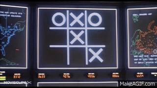

GREETINGS PROFESSOR FALKEN
SHALL WE PLAY A GAME?

MACHINE LEARNING IS THE SCIENCE OF GETTING COMPUTERS TO ACT WITHOUT BEING EXPLICITLY PROGRAMMED.
SHALL WE PLAY A GAME?
A STRANGE GAME,
THE ONLY WINNING MOVE IS
NOT TO PLAY.
Olivier Wulveryck - @owulveryck